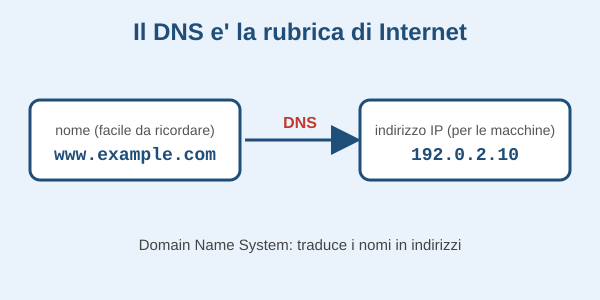

Il DNS
Quando scrivi www.units.it nel browser, devo prima risolvere questo nome in un indirizzo IP per poter aprire una connessione TCP con il server web che lo gestisce. Se ne occupa il DNS (Domain Name System), un'infrastruttura distribuita in tutto il mondo.


Un esempio pratico
| Nome di un host | Indirizzo IP |
|---|---|
| mail.virgilio.it | 192.113.21.27 |
| www.microsoft.com | 115.116.123.11 |
Usare gli indirizzi IP a mano-> usare i nomi, tradotti dal DNS- Gli indirizzi IP possono cambiare nel tempo
- Possono dipendere dalla posizione geografica del client
Eventi storici
| Data | Evento |
|---|---|
| 1985 | Jon Postel manteneva un unico host file (nome -> indirizzo IP). Ogni nodo ne teneva una copia, e ogni modifica andava comunicata a Postel e poi ricopiata in tutti i nodi |
| Novembre 1987 | Nascono il DNS vero e proprio: RFC 1034 e RFC 1035 (ideatore: Paul Mockapetris) |
Il nuovo sistema doveva rispettare quattro requisiti:
- Scala: centinaia di milioni di righe, usate da miliardi di host
- Performance: accesso rapidissimo, anche per le risposte NXDOMAIN
- Fault-tolerance: nessun single point of failure
- Autonomia amministrativa: ogni organizzazione gestisce i propri dati
Curiosità
Clicca qui per una curiosità
Mostra / nascondi una nota